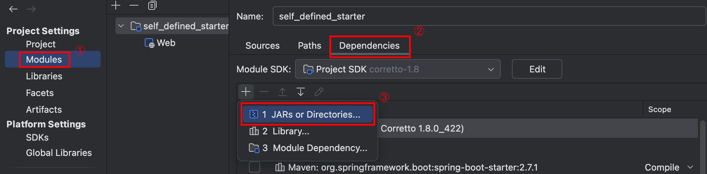
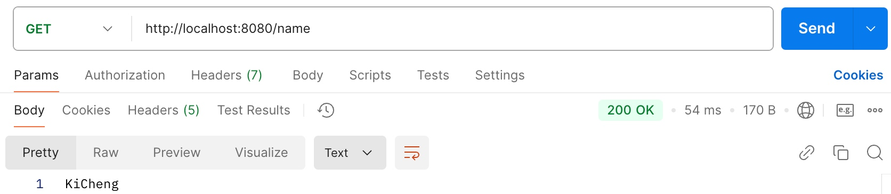
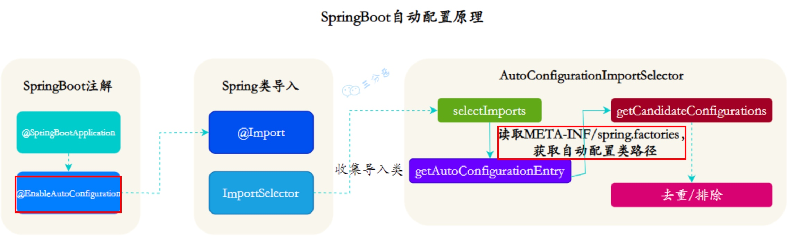

手写SpringBoot Starter
SpringBoot 自动装配
用我的一句话总结自动装配就是：SpringBoot 通过起步依赖和自动装配机制来简化项目的构建和开发管理。
手动实现SpringBoot Starter
步骤1 创建Maven项目
创建新 Maven 项目，手动添加必要的 pom 依赖。
1 | <parent> |
步骤2 添加自动配置
在 src/main/resources/META-INF 目录下创建 spring.factories，并添加：
1 | org.springframework.boot.autoconfigure.EnableAutoConfiguration=\ |
步骤3 自动配置类
自动配置类中用到的两个重要的注解：
@Configuration：声明配置类，负责定义和装配 Bean；@EnableConfigurationProperties：启用属性绑定，将配置文件中的属性映射到对应的 Java 类中。
1 |
|
步骤4 配置属性类
创建一个配置属性类，使用@ConfigurationProperties注解来绑定配置文件中的属性。
1 |
|
步骤5 创建后端服务的Service和Controller
1 | public class MyServiceImpl implements MyService{ |
步骤6 发布Starter
发布到 Maven 仓库，这里为了快速验证，将项目打成 jar 包并手动导入到主项目中。
步骤7 使用Starter
在主应用中添加 starter 依赖或手动将 jar 包导入 Maven 项目。
手动导入 jar 包的方法：

在 application.yml 中配置属性：
1 | my: |
接口测试成功访问 yml 配置中的内容：

SpringBoot 自动装配原理
实现自动装配最重要的注解是@EnableAutoConfiguration，底层的 AutoConfigurationImportSelector 会扫描外部引用的 jar 包的 META_INF/spring.factories 目录，收集「自动配置类」并将其导入到 Spring 容器中。

根据 META_INF/spring.factories 配置文件中的信息自动加载指定的类或功能。
SpringBoot 启动原理
- 创建 SpringApplication 实例，负责应用启动和初始化；
- 从 application.yml 中加载配置文件和环境变量；
- 创建上下文环境 ApplicationContext，加载 Bean 完成依赖注入；
- 启动内嵌的 Tomcat 服务器；
- 发布启动完成事件。
启动类利用 Java 反射获取启动类的对象实例：
1 | SpringApplication.run(SelfDefinedStarterApplication.class, args); |
其中启动类中最重要的@SpringBootApplication注解包含了@Configuration、@ComponentScan、@EnableAutoConfiguration三大注解，它们的作用就不在这里重复了，只是提一下只是因为这个注解和上面的启动过程息息相关。
本博客所有文章除特别声明外，均采用 CC BY-NC-SA 4.0 许可协议。转载请注明来源 KiCheng's Blog！